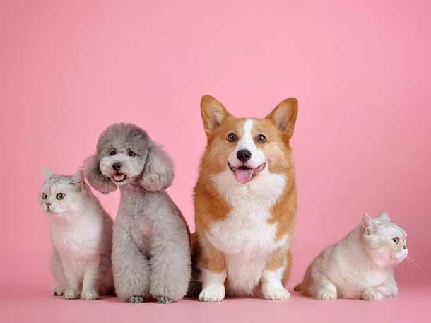

Adopt the Perfect Pet
from more than 17,000 animal shelters & rescues
Need to Rehome Your Pet?
Adopt-a-Pet.com is now offering our Rehome program — the safe, reliable, and free way to find a loving new home for your pet.
Pet Adoption Tips

Why Adopt a Dog or Cat Over Buying?
Did you know that over 1,000 people per hour run a search right here looking to adopt a pet? Pet adoption is quickly becoming the preferred way to find a new dog, puppy, cat or kitten. Best of all, there are so many benefits when you adopt a dog or adopt a cat over buying. For instance, pet adoption will almost always be more affordable than buying a puppy for sale from a breeder or finding a kitten for sale from a litter. There are more benefits as well. Since pets in rescues and shelters usually come from a home where the owners ran out of money, got divorced, or had to move, it's common to find that the dogs and cats on our website are already housetrained, good with kids, or do well with other pets. People are finding out that buying a puppy for sale from a breeder isn't all it's cracked up to be, and the dogs and cats don't leave the organization without having their shots and being taken to the vet. That means less stress, and more savings! So what are you waiting for? Go find that perfect pet!
The Experts & Tools You Need to Find the Perfect Pet
Have you addressed what type of pet personality you are looking for? Wait a second, did we just say personality, and not breed? Yes, that is right. Finding the ideal pet for yourself or family should start with an understanding of the ideal pet personality. Consider this, do you need a dog that is low key and good with kids, or are you looking for an energetic pal who is into trail running? Perhaps a cat that will get along well with others is what you need. The dog rescues and cat rescues that post hundreds of local pets near you are experts at matching you with a dog or cat who will love the life you can provide. This is why so many people are realizing focusing on dog adoption and cat adoption from a rescue is the ideal pet search process. Best of all, our website has a feature called "New Pet Alert." Simply tell us what you are looking for and we will email you when that perfect pet is available! So even if you've made the commitment to adopt a puppy or adopt a kitten, we will email you immediately when we know of a local little furry fellow who is in need of a new home!